Regression comparison
Download resultsDataset
Training setting
Repulsion weight
Repulsion location
Compare repulsion locations
Method
Random points redraw every step and exclude all training inputs. Training and random use B points; combined uses 2B. Prediction axes match within each DE or BDKN row.
Functional repulsion
BetterWorse · relative rank within each column
DE
| Repulsion inputs | RMSE | NLL | Training seconds |
|---|---|---|---|
| Training | 2.70291 | 4.26015 | 12.22 |
| Random | 2.67911 | 1.94625 | 13.29 |
| Training + random | 2.23442 | 1.96130 | 13.24 |
BDKN
| Repulsion inputs | RMSE | NLL | Training seconds |
|---|---|---|---|
| Training | 2.81535 | 4.55324 | 12.36 |
| Random | 2.35288 | 2.08101 | 13.47 |
| Training + random | 2.50190 | 2.10180 | 13.38 |
Stage 1 · total loss and data fit
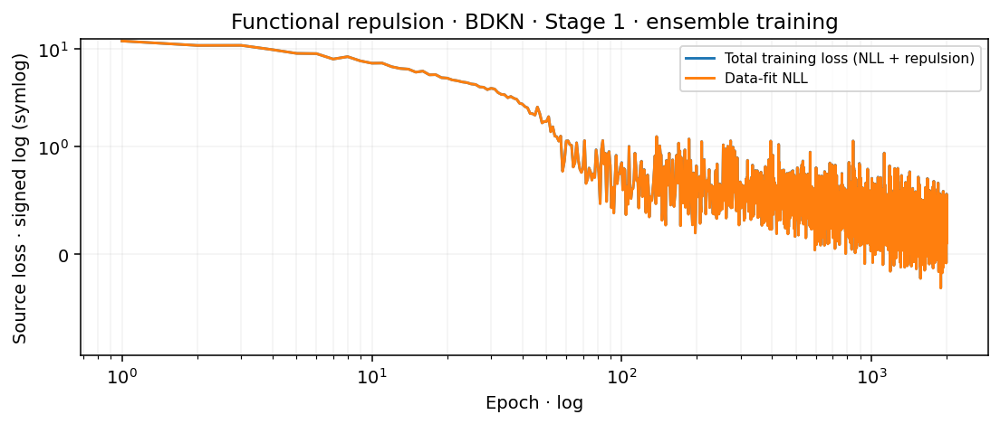
X: log · Y: signed log
X: log · Y: signed log
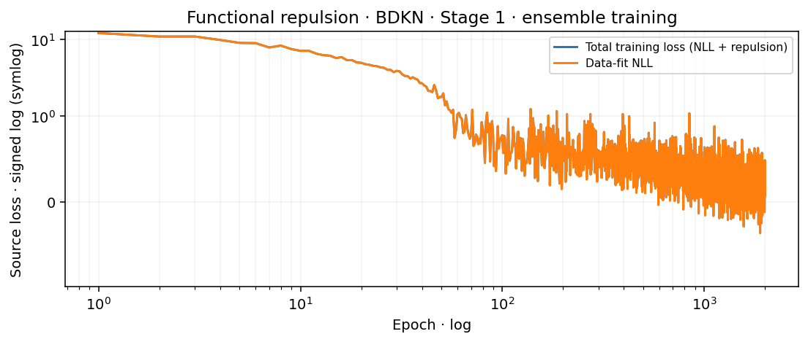
X: log · Y: signed log
Repulsion loss R only
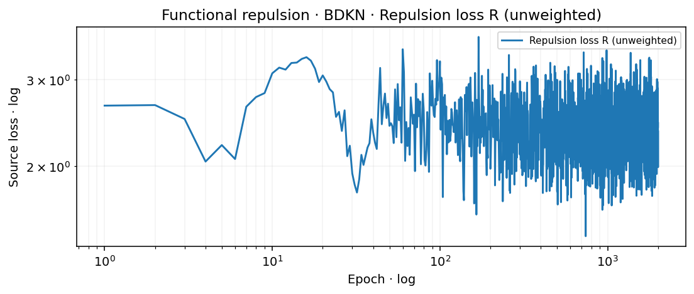
X: log · Y: log
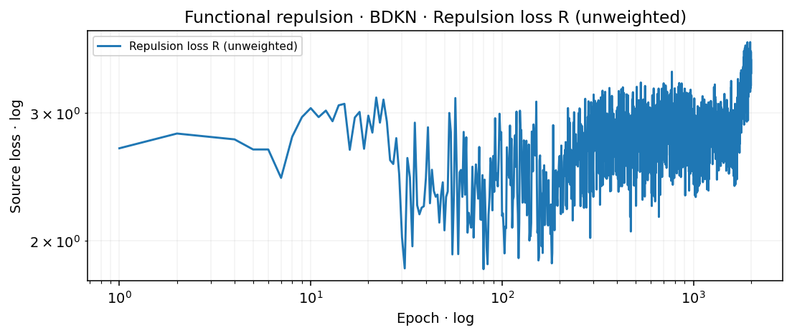
X: log · Y: log
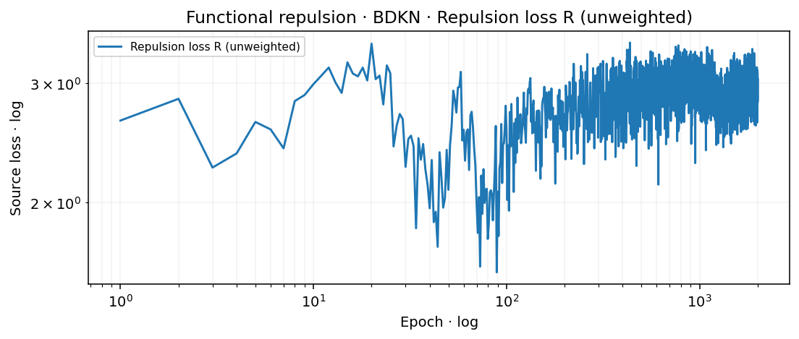
X: log · Y: log
Stage 2 · Bayesian marginal NLL
First-order repulsion
BetterWorse · relative rank within each column
DE
| Repulsion inputs | RMSE | NLL | Training seconds |
|---|---|---|---|
| Training | 2.70472 | 4.22608 | 26.11 |
| Random | 1.82544 | 1.72001 | 26.22 |
| Training + random | 1.62364 | 1.76985 | 27.41 |
BDKN
| Repulsion inputs | RMSE | NLL | Training seconds |
|---|---|---|---|
| Training | 2.80628 | 4.53615 | 26.24 |
| Random | 2.08157 | 1.82341 | 26.35 |
| Training + random | 1.91351 | 1.83419 | 27.55 |
Stage 1 · total loss and data fit
X: log · Y: signed log
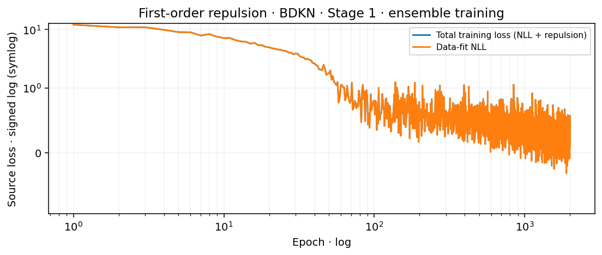
X: log · Y: signed log
X: log · Y: signed log
Repulsion loss R only
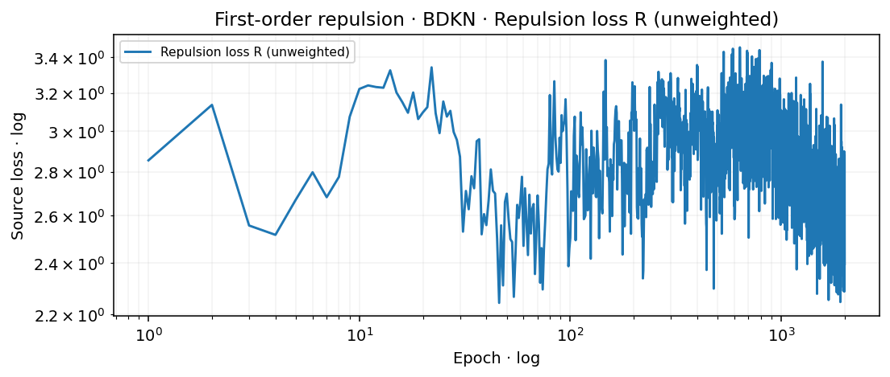
X: log · Y: log
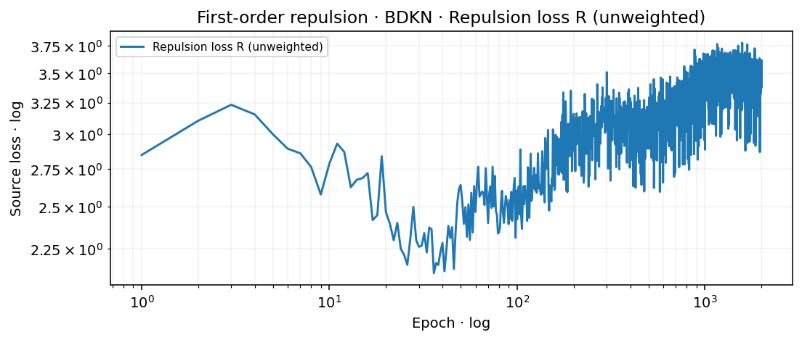
X: log · Y: log
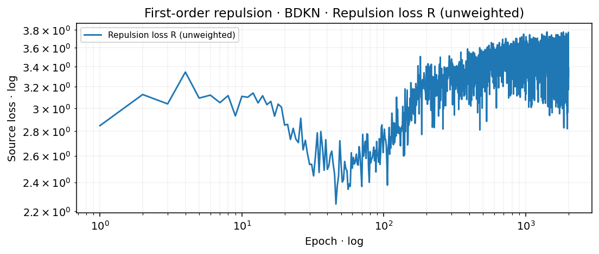
X: log · Y: log
Stage 2 · Bayesian marginal NLL
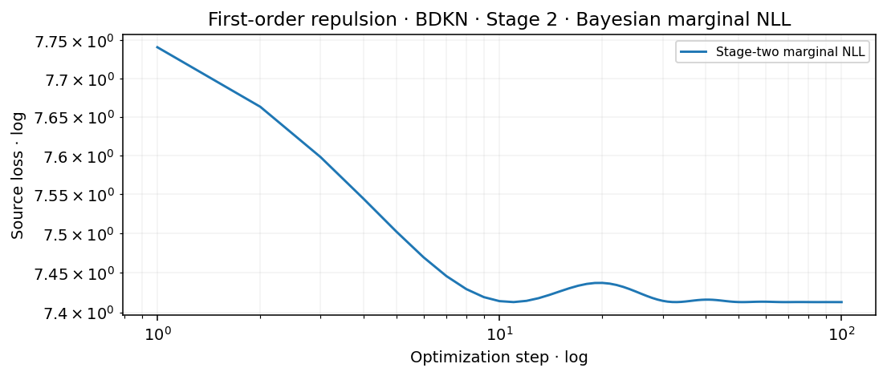
X: log · Y: log
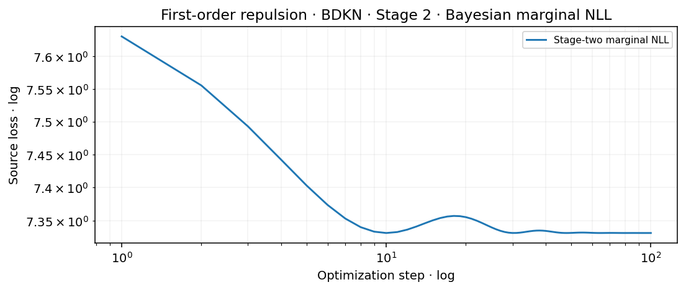
X: log · Y: log
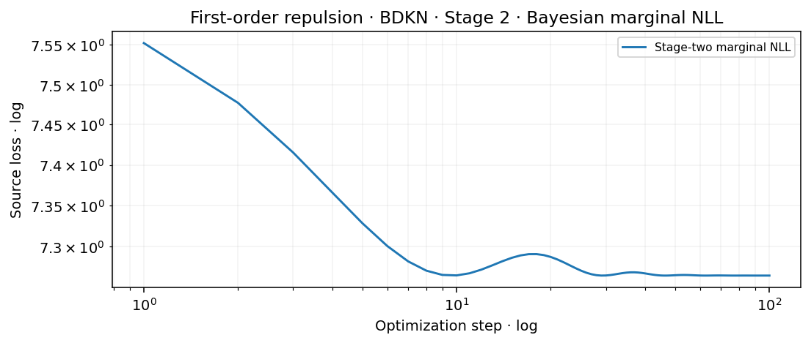
X: log · Y: log
Weight repulsion · location-independent
The loss compares network parameters directly. These same results apply to every location.
| Stage | RMSE | NLL | Training seconds |
|---|---|---|---|
| DE | 1.31546 | 2.13834 | 9.52 |
| BDKN | 1.49709 | 2.14215 | 9.65 |